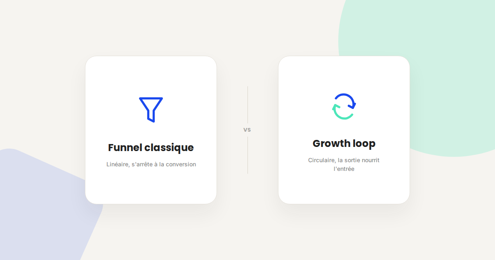
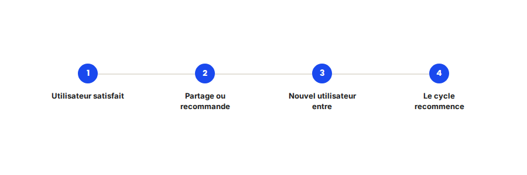

Growth loops vs funnel marketing classique : repenser l'acquisition
Un funnel marketing classique se dessine de haut en bas : acquisition, activation, conversion, fin. Un growth loop reboucle la sortie vers l'entrée — chaque utilisateur satisfait devient, directement ou indirectement, une nouvelle source d'acquisition. La différence n'est pas cosmétique, elle change la façon de prioriser les investissements.

Le funnel marketing classique — acquisition, activation, rétention, revenu, recommandation en bout de chaîne — reste un outil pédagogique utile, mais il décrit mal la façon dont grandissent réellement les produits et les marques qui scalent le plus efficacement. Le concept de growth loop, popularisé par des praticiens du growth comme Brian Balfour, propose une lecture différente : circulaire plutôt que linéaire.
Ce qui ne change pas
Un growth loop n'annule pas les étapes classiques du funnel : il faut toujours acquérir, activer, convertir. Ce que la logique de méthode de travail ne change pas non plus, c'est la nécessité de mesurer précisément chaque étape avec un tracking fiable — un loop mal mesuré est aussi inefficace qu'un funnel mal mesuré, simplement plus difficile à diagnostiquer tant la circularité brouille les causes et les effets.
Ce qui change vraiment dans la logique growth loop
- La sortie du funnel devient une entrée pour le cycle suivant. Plutôt que de considérer la recommandation client comme une étape finale optionnelle, le loop la conçoit comme un mécanisme structurel qui réalimente directement l'acquisition — parrainage, contenu généré par les utilisateurs, effet réseau.
- L'investissement se déplace vers ce qui compose dans le temps. Un canal d'acquisition payant s'arrête dès qu'on coupe le budget ; un loop bien construit continue de produire de la croissance même quand l'investissement marketing ralentit, parce que le mécanisme est intégré au produit ou au service lui-même.
- La priorité n'est plus le volume d'entrée, mais le taux de bouclage. La question centrale devient : quelle proportion des utilisateurs satisfaits déclenche effectivement une nouvelle entrée ? Un petit pourcentage d'amélioration sur ce taux a un effet composé bien supérieur à une hausse équivalente du volume d'acquisition brut.
- Le diagnostic d'un point de blocage change de nature. Dans un funnel linéaire, on cherche l'étape qui fuit le plus. Dans un loop, on cherche le maillon qui empêche le cycle de se refermer — souvent un point de friction dans le mécanisme de partage ou de recommandation, pas dans l'acquisition elle-même.

Un exemple qui illustre bien la différence
Pour un client dont l'essentiel de l'acquisition reposait historiquement sur le paid, identifier et renforcer un loop existant mais négligé — les avis clients publiés spontanément après achat, repris ensuite dans les résultats de recherche organiques et les IA génératives — a permis de réduire la dépendance au budget publicitaire de façon mesurable en quelques mois, sans qu'aucun euro supplémentaire n'ait été investi dans ce mécanisme au départ, simplement en facilitant le geste de laisser un avis au bon moment du parcours.
Ce qu'il faut faire concrètement
- Identifiez vos loops existants avant d'en construire de nouveaux : parrainage informel, avis clients, contenu partagé — ils existent souvent déjà à l'état embryonnaire, sans avoir été reconnus ni renforcés comme tels.
- Mesurez le taux de bouclage, pas seulement le volume d'entrée : combien d'utilisateurs satisfaits déclenchent effectivement une nouvelle entrée dans le cycle, et à quel délai.
- Réduisez la friction au moment du bouclage (simplifier le partage, faciliter le dépôt d'avis au bon moment) plutôt que d'augmenter uniquement le budget d'acquisition en amont.
- Gardez le funnel classique comme outil de diagnostic à l'intérieur de chaque itération du loop — les deux logiques se complètent, elles ne s'opposent pas.
FAQ
Un growth loop remplace-t-il le funnel marketing classique ?
Non, il l'englobe différemment. Chaque itération du loop contient toujours les étapes classiques d'un funnel — acquisition, activation, conversion — mais la sortie reboucle vers une nouvelle entrée plutôt que de s'arrêter.
Tous les business peuvent-ils construire un growth loop ?
La plupart ont au moins un loop potentiel (avis, recommandation, contenu généré), mais son efficacité varie fortement selon le secteur. Certains modèles B2B à cycle de vente long ont des loops plus lents à boucler que le B2C.
Faut-il un produit digital pour mettre en place un growth loop ?
Non, même une activité de service peut s'appuyer sur des loops — recommandation client, étude de cas partagée, contenu expert repris par d'autres. Le mécanisme n'est pas réservé aux produits SaaS ou applicatifs.
Envie de repenser votre stratégie d'acquisition ?
Pour aller plus loin, voir la page Comment je travaille, la page CRO, et la page Analytics.
Pour continuer sur ce sujet.